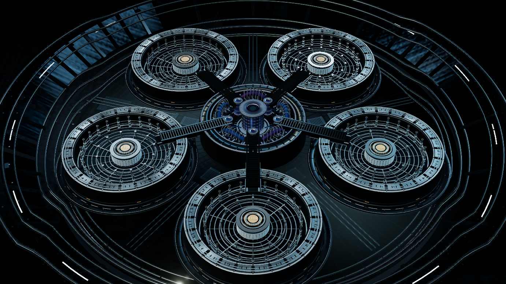

ECHTE REAKTORANSICHT / ÄLTERE QA-AUFNAHME
Die Anlage fährt hoch.
Die vier Bilder stammen aus einer früheren lokalen Prüfung der tatsächlichen Reaktoransicht. Der Ablauf hier ist eine öffentliche, vom Spielserver getrennte Demonstration – kein aktueller Live-Mitschnitt.
01 / 04

ANLAGE BEREIT
WAS DAS SYSTEM TUT
Fünf Fälle, getrennte Prüfstände.
Die Anlage ist der visuelle Einstieg. Danach öffnet jede Reaktoreinheit einen eigenen Fall. Abgabe, Prüfung und gezielte Revision sind getrennte Zustände; der Schlussaudit kann erst nach den notwendigen Abschlüssen beginnen.
- 01 · ÖffnenEin Reaktor wird gezielt ausgewählt.
- 02 · BearbeitenBelege und Entscheidungen gehören zu diesem Fall.
- 03 · PrüfenEine Abgabe erhält einen eigenen Prüfstatus.
- 04 · RevisionBei Bedarf wird nur der betroffene Reaktor wieder geöffnet.
- 05 · SchlussauditErst nach den erforderlichen Abschlüssen freigeschaltet.
ISOLIERTE ZUSTANDSSIMULATION
Einen Prüfstand selbst durchspielen.
Ein Reaktor wird abgegeben, geprüft und gegebenenfalls einzeln zur Revision geöffnet. Die folgenden Knöpfe simulieren die Regel – sie bearbeiten keine echte Akte.
REAKTOR 01Offen
Schlussaudit gesperrt · 0 von 5 Prüfständen abgeschlossen.